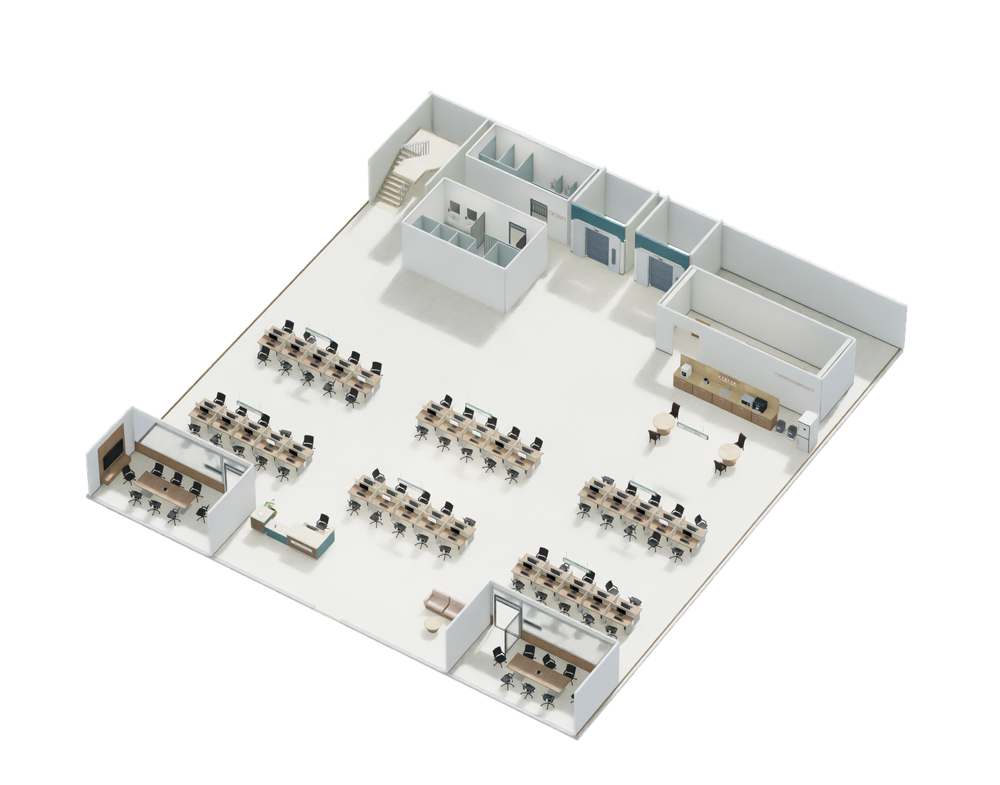

乘电梯到指定办公层
限定在同一原生办公楼内，从一楼乘电梯到二楼并完整驶出；上下办公楼资源分别实例化，不穿越网站拼接楼层。
通用任务 · 双本体验证待完成ENVIRONMENT 01 / 9
01WORKPLACE & RESEARCH


Interior
INSIDE THE ENVIRONMENT
Select a level to explore its interior.

CAPABILITIES & EMBODIMENTS
通用任务面向 FWMiniPiper 与 G1；专用任务测试指定本体的特有能力。当前均为待验证设计，不表示已完成物理执行。
原生 lower 楼一至六层均含 Mailroom 与 Island A 至 F 工位；使用收件区到工位、上层回收和多站次序体现服务。upper 为独立三层资源，不与 lower 拼接通行。
限定在同一原生办公楼内，从一楼乘电梯到二楼并完整驶出；上下办公楼资源分别实例化，不穿越网站拼接楼层。
通用任务 · 双本体验证待完成在同一原生办公楼内读取 E1 停运提示，选择可用 E2 到指定办公层；无配送目标。
通用任务 · 双本体验证待完成需绑定可复现停运或恢复初态、可见提示、可行时间预算和通行历史裁判；恢复不得依赖无限等待或策略可调用的调试接口。
尚未启用正式评测；需完成初态配置、成功判据及指定本体的完整物理轨迹验证。
从门外打开指定会议室门，进入后退出并恢复关门状态；门初始不锁，无物品搬运。
通用任务 · 双本体验证待完成在一楼 Mailroom 交接台新增的档案柜上滑开柜门至指定开口，再关门；不取物、不要求身体进入。
通用任务 · 双本体验证待完成已安装真实滑轨、刚体与把手；两种夹爪完整开合轨迹及任务初态、裁判待验收。
尚未启用正式评测；需完成初态配置、成功判据及指定本体的完整物理轨迹验证。
读取目标开关状态，把指定办公公共区域照明设为请求状态，保持其他回路不变。
通用任务 · 双本体验证待完成在本场景指定可达空调面板上观察初态，将开关、模式和设定值改为任务要求；至少一项需改变，其他设备不变。评分使用面板与控制器实际状态，不要求室温达到设定温度。
通用任务 · 双本体验证待完成需验证两种夹爪不误触相邻按键，并接入模式、开关和设定值裁判；不把按钮几何存在当作可按或热效果证据。
尚未启用正式评测；需完成初态配置、成功判据及指定本体的完整物理轨迹验证。
从二楼 Island B 的有间距候选文件盒中找出目标，送回一楼 Mailroom；按标签而非近邻位置选择。
通用任务 · 双本体验证待完成需按本任务配置动态物品、身份或数量标签、交接与暂放区域及指令专属历史判据；源站点存在不代表新任务初态已实现。
尚未启用正式评测；需完成初态配置、成功判据及指定本体的完整物理轨迹验证。
将一楼 Mailroom 的两件不同文件分别送到二楼 Island A 和六楼 Island B，允许逐件往返。
通用任务 · 双本体验证待完成需按本任务配置动态物品、身份或数量标签、交接与暂放区域及指令专属历史判据；源站点存在不代表新任务初态已实现。
尚未启用正式评测；需完成初态配置、成功判据及指定本体的完整物理轨迹验证。
从六楼 Island A 收回文件并送到一楼 Mailroom，再按清单关闭六楼指定公共照明；明确记录物品归还和设备终态。
通用任务 · 双本体验证待完成需按本任务配置动态物品、身份或数量标签、交接与暂放区域及指令专属历史判据；源站点存在不代表新任务初态已实现。
尚未启用正式评测；需完成初态配置、成功判据及指定本体的完整物理轨迹验证。
在一楼 Mailroom 阅读指定楼层与工位便笺，离开后便笺撤下；将文件送到记住的二楼 Island B。
通用任务 · 双本体验证待完成需按本任务配置动态物品、身份或数量标签、交接与暂放区域及指令专属历史判据；源站点存在不代表新任务初态已实现。
尚未启用正式评测；需完成初态配置、成功判据及指定本体的完整物理轨迹验证。
打开一楼 Mailroom 滑门柜取指定文件盒，暂放后关柜门，送到二楼 Island A，并把指定办公照明设为开启。
通用任务 · 双本体验证待完成需按本任务配置动态物品、身份或数量标签、交接与暂放区域及指令专属历史判据；源站点存在不代表新任务初态已实现。
尚未启用正式评测；需完成初态配置、成功判据及指定本体的完整物理轨迹验证。
将一楼 Mailroom 的两件不同文件分别送到二楼 Island A 和六楼 Island B，本专用任务要求两件包装均稳定装入车载篮筐后再开始交付，运输途中保持订单区分，逐件取出并释放到正确交接区域。
专用任务 · 待本体验证测试 FWMiniPiper 车载篮筐的多件承载、订单区分与再抓取；需验证篮内双件空间、总负载、抗滑和手臂取放路径，不要求 G1 配备相同篮筐。
尚未启用正式评测；需完成初态配置、成功判据及指定本体的完整物理轨迹验证。